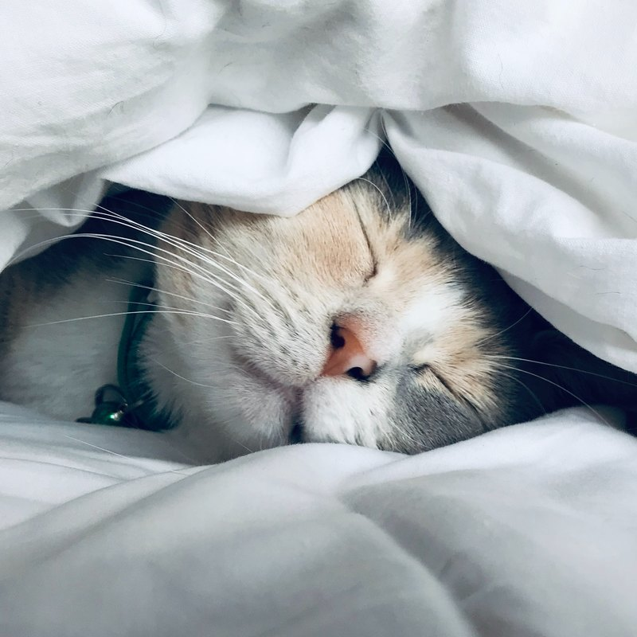
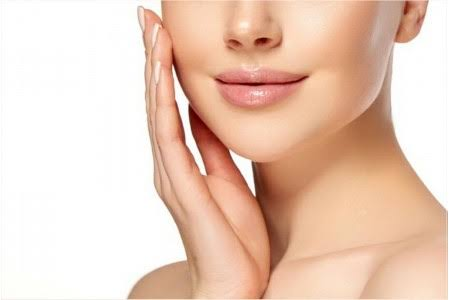
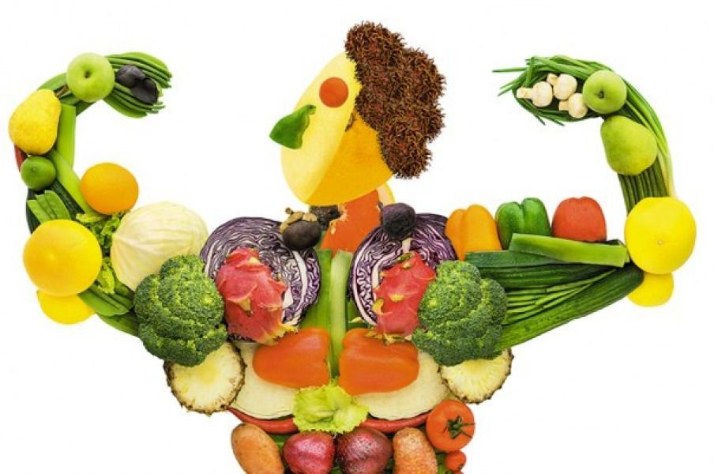

Внешний вид — это отражение вашего здоровья, дисциплины и отношения к себе. Мега софтмакс — это самый доступный и безопасный способ прокачать свою привлекательность на максимум. Вместо радикальных вмешательств этот подход использует регулярный уход, правильные привычки и работу над стилем, позволяя раскрыть ваш природный потенциал без операций и рисков
Сон и восстановление
Для начала важно понимать что от хорошего качественного сна зависит многое в вашей жизни физическое здоровье, работа мозга и эмоциональное состояние,и вот небольшой гайд на хороший сон

Сон 7-8 часов
Ложится спать до 22:30(полезно для гормонального баланса, работы сердца и восстановления организма,также для роста)
Убрать синий свет за полчаса до сна(телефон,пк,телевизор)
Уход за кожей
Твоя кожа дает тебе 50% привлекательности

Очищение лица пенкой или гелем каждый день утром и перед сном
Увлажнение лица легким увлажняющим кремом
И самое главное от чего зависит качеств вашей кожи это питание,под него отделный раздел
Волосы и уход за ними
Волосы составляют около 30% внешности человека,и для начала вам нужно подбрать волосы под вашу форму лица
Если у вас волосы как сосульки,используйте пудру,глину,спрей для объема и текстурирования волос
Покраска волос в наиболее подходящий вам цвет
Мыть голову каждый день хорошим шампунем и (по желанию)кондиционером
Питание
Питание - это фундамент, без которого всё остальное просто не работает

Полезные жиры для увлажнения. Ешьте авокадо, орехи, оливковое масло и красную рыбу. Без них кожа становится сухой, шелушится и быстрее покрывается морщинами.
Качественный белок для упругости. Добавляйте в рацион яйца, индейку, рыбу и морепродукты. Это источник коллагена, который отвечает за подтянутый овал лица и отсутствие дряблости.В день минимум 100г белка
Антиоксиданты и клетчатка от воспалений. Ешьте больше зеленых овощей, ягод и цитрусовых. Они защищают кожу от старения, выводят токсины и помогают избавиться от прыщей.
Внутреннее состояние организма и рацион питания определяют 80% здоровья и внешнего вида кожи, в то время как косметические средства дают лишь 20% результата. Система ухода строится на ежедневном балансе белков, полезных жиров, зелени и ягод, а также небольшой доли любимых продуктов для поддержания ментального здоровья. Изменения кожи зависят от ежедневных пищевых привычек